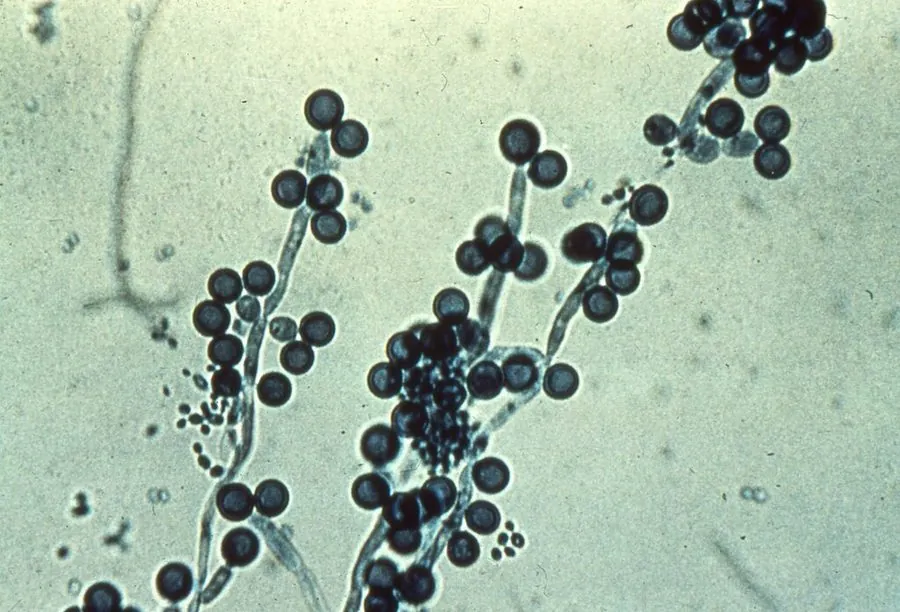

真菌 · 真菌界
白色念珠菌 Candida albicans

人体皮肤和黏膜上常见的条件致病真菌，菌落白色、呈酵母状，免疫力低下时会引起鹅口疮等念珠菌感染。
- 分类
- 门子囊菌门纲半子囊菌纲目酵母目科酵母科属念珠菌属
- 栖息环境
- 人体皮肤、口腔、肠道等黏膜表面，也可在潮湿环境与医疗器械上生长
- 地理分布
- 全球分布，常见于人类和动物体表与体内
- 保护级别
- 暂无评估（条件致病真菌，非保护对象）
物种志
白色念珠菌是子囊菌门酵母目的条件致病真菌，以单细胞酵母形态存在，也能形成假菌丝。在培养基上，它的菌落呈乳白色、光滑、有酵母气味；在显微镜下，细胞呈椭圆形，可通过出芽生殖，也能形成有隔的假菌丝，这些结构有助于它侵入宿主组织。
白色念珠菌通常生活在健康人的口腔、肠道和皮肤上，与人体共生而不致病；但当免疫力下降、长期使用抗生素或激素、或体内菌群失衡时，它会过度繁殖，引起鹅口疮、阴道炎、皮肤感染，严重时可进入血液导致系统性念珠菌病。它是医院内常见的条件致病真菌之一，在医疗器械表面也能形成生物膜，增加治疗难度。预防以保持清洁、合理用药和增强免疫力为主。
形态与习性
- 分类子囊菌门酵母目念珠菌属
- 形态单细胞酵母，可形成假菌丝
- 菌落乳白色、光滑，有酵母气味
- 致病性条件致病，免疫力低下时引起感染
- 常见感染鹅口疮、阴道炎、皮肤感染，严重时系统性感染
- 防控保持清洁、合理使用抗生素和增强免疫力
趣味知识
- 白色念珠菌通常与人体和平共处，只在免疫力下降时才致病。
- 它既能以单细胞酵母形态存在，也能长出假菌丝侵入组织。
- 长期滥用抗生素会破坏菌群平衡，增加念珠菌感染的风险。